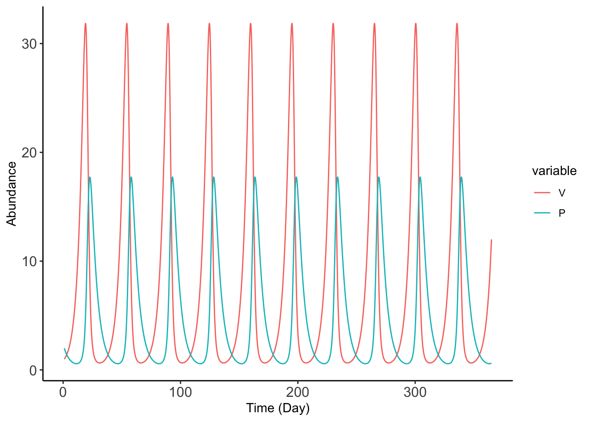
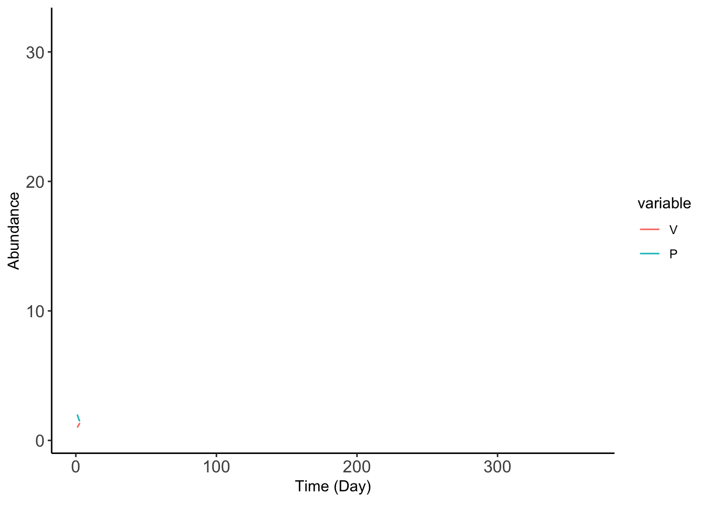
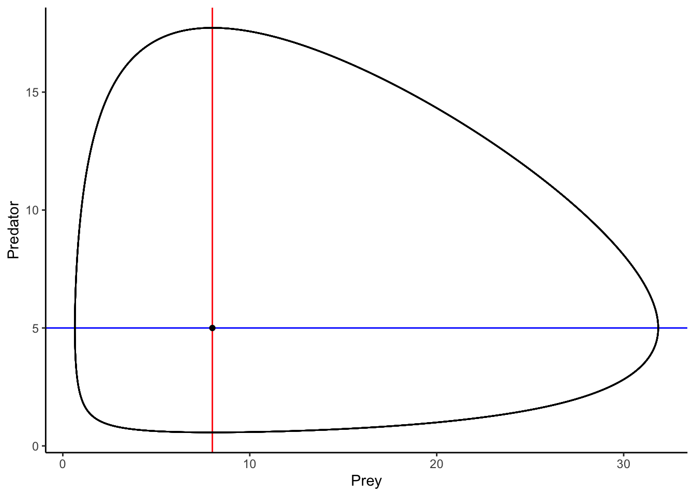
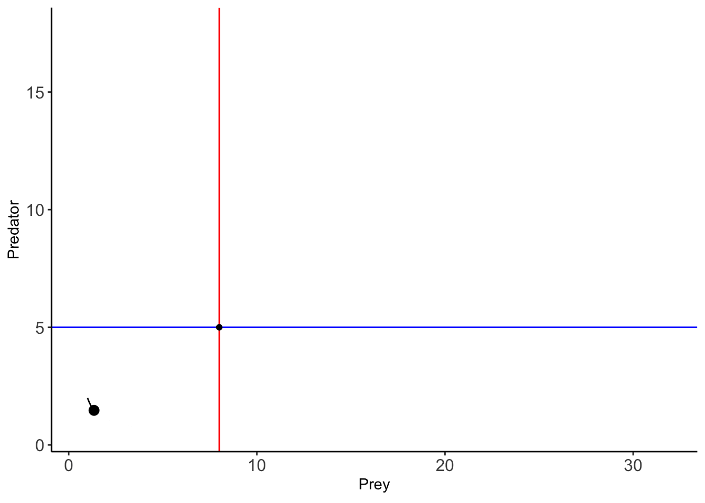
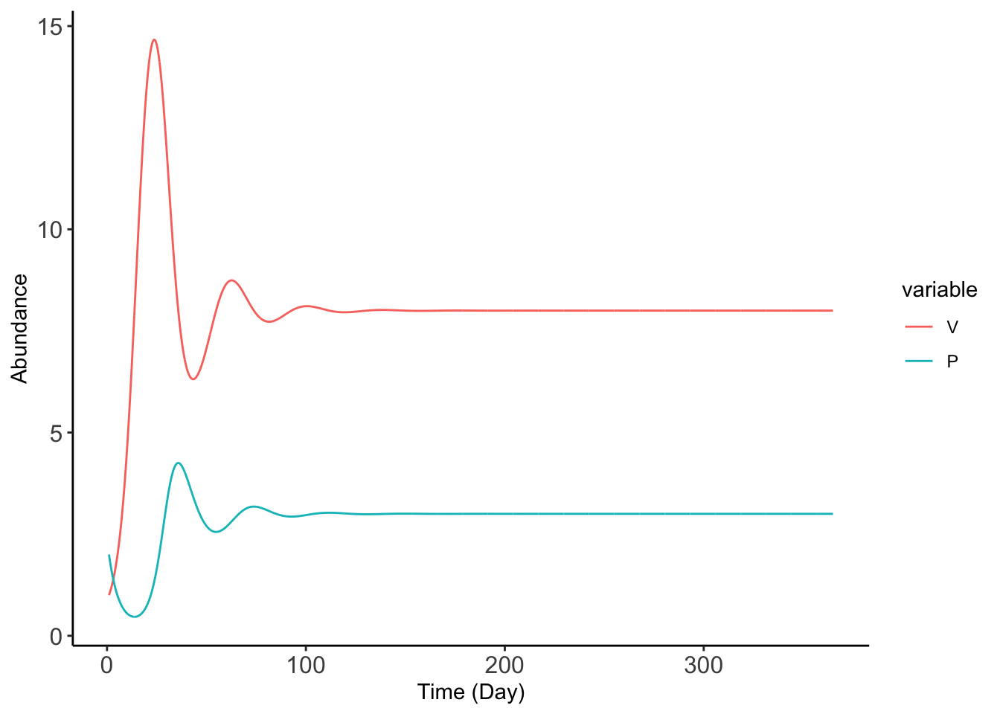
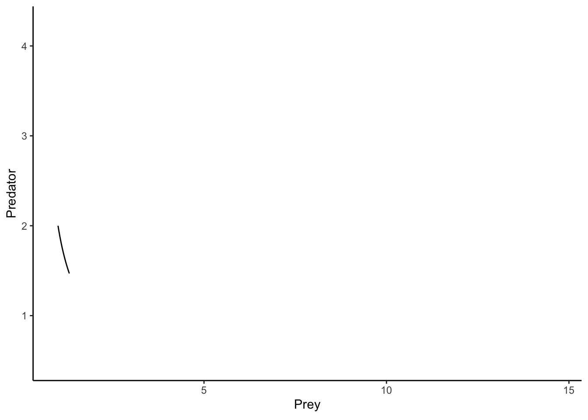

lv_results_melt <- melt(lv_results, id.vars = 'time')8 Visualizing dynamics
8.1 Using ggplot to make the plots
Starting from our previous model, here we’re going to use graphs to understand our model a bit better. What does this graph look like? Let’s use ggplot2 (though base plot also works!) to graph it. Now remember that our data.frame should be reshaped so that it’s a bit easier to work with:
So let’s plot it out:
ggplot(lv_results_melt, aes(x = time, y = value, color = variable, group = variable)) +
geom_line() +
theme_classic() +
xlab("Time (Day)") +
ylab("Abundance") +
theme(axis.text = element_text(size = 12))
So what does that tell us, it tells us that we’re thinking abut things in a cycle. Now let me show you animations. Making animations without ggplot used to be a clunky back then, but I find them so easy (just an additional coding line) that it’s not a gimmick to make.
animation <- ggplot(lv_results_melt, aes(x = time, y = value, color = variable)) +
geom_line() +
theme_classic() +
xlab("Time (Day)") +
ylab("Abundance") +
transition_reveal(time) +
theme(axis.text = element_text(size = 12))
animate(animation, duration = 15) 
So we can see that as the prey population increases, the population of the predator will also increase due to the greater resources. However, as the population of the predator increases, they will predate more of the prey, and the prey decreases and thus the predator decrease well. This leads to the cycles.
8.2 Going further into dynamics
There is another way of visualizing the above dynamics, and it is by using phase-plot diagrams. Phase-plane diagrams are a useful for understanding the qualitative patterns of the dynamics. Specifically, for the Lotka-Volterra Predator-Prey Model, we show how the predator and prey change relative to each other. By placing prey abundance on the x-axis and predator abundance on the y-axis, we can plot the abundance of both species at time \(t\).
How do you do this qualitatively? There are some checklists of things you can draw in. For example, nullclines are curves on phase-plot diagrams where the derivatives of the state variables are equal to 0. By setting \(\frac{dV}{dt}\) and \(\frac{dP}{dt}\) to 0, we are searching for specific values of the prey (\(V^*\)) and predator numbers (\(P^*\)) that lead to the derivatives being zero.
I did the math for you, but try to do it yourself on a piece of paper!
\[ \begin{aligned} 0 &= rV^* - kV^*P^* ,\\ rV^* &= kV^*P^* ,\\ r &= kP^* ,\\ P^* &= \frac{r}{k}. \end{aligned} \]
and
\[ \begin{aligned} 0 &= akV^*P^* - \mu P^* ,\\ akV^*P^* &= \mu P^* ,\\ akV^* &= \mu ,\\ V^* &= \frac{\mu}{ak}. \end{aligned} \]
For the prey population to not change (\(\frac{dV}{dt} = 0\)), the predator population must be at the value: \(\frac{r}{K}\) (the prey growth rate divided by the kill rate). For the predator population to not change (\(\frac{dP}{dt} = 0\), the prey population must be at the value \(\frac{\mu}{ak}\) (the predator mortality rate divided by the kill rate multiplied by the conversion rate). Let’s plot this out.
param <- c(r= 0.25, k = 0.05, a = 0.5, mu = 0.2)calculate_nullclines <- function(param_df){
v_nullcline <- param_df["mu"]/(param_df["a"] * param_df["k"])
p_nullcline <- param_df["r"]/param_df["k"]
return(data.frame(V_null = v_nullcline, P_null = p_nullcline))
}
null_cline_df <- calculate_nullclines(param)So, if we have the x-axis be the prey and the y-axis be the predator, then the nullclines should be horizontal (y-intercept) or vertical (x-intercept).
basis_gg<- ggplot() +
geom_vline(xintercept = null_cline_df[,"V_null"], color = 'red') +
geom_hline(yintercept = null_cline_df[,"P_null"], color = 'blue') +
annotate("point", x =null_cline_df[,"V_null"], y = null_cline_df[,"P_null"] ) +
xlab("Prey") +
ylab("Predator") +
theme_classic()We can plot the predator and prey abundance on top of it:
basis_gg +
geom_path(data = lv_results,aes(x = V, y= P ))
This is something called a closed-orbit, this is another way of visualizing the time series with the predator and prey: this closed orbit shows that there’s a cycle. Again let’s animate this:
animation_2<- basis_gg +
geom_path(data = lv_results,aes(x = V, y = P )) +
geom_point(data = lv_results,aes(x = V, y = P ), size = 3) +
transition_reveal(time) +
theme(axis.text = element_text(size = 12))
animate(animation_2, duration = 15) 
8.3 Going even further
Now this suggests that the model is neutral, but what if we’re interested in cases where the model goes to an equilibrium—what stabilizes the Lotka–Volterra predator–prey model? Negative feedbacks (where something is limited) generally stabilize the system. Notably, think about the growth of the rabbit: it grows exponentially without the presence of the predator. Can our system stabilize by adding some sort of growth that is slowed down? We can include a logistic growth to the prey population so that our system of equations look like:
\[ \begin{aligned} \frac{dV}{dt} &= rV(t)(1-\frac{V(t)}/{C}) - kV(t)P(t) \\ \frac{dP}{dt} &= bkV(t)P(t) - \mu P(t) \end{aligned}, \]
where \(C\) is now the carrying capacity or the maximum population size at which the population can sustain itself. We can see that as the population of rabbits approaches \(C\),it will become \(rV(t)(1-1)\) or 0. We can modify our model:
LV_prey_pred_C <- function(t, state, param) {
with(as.list(c(state, param)), {
dV <- ((r * V)*(1-V/C)) - (b * V * P)
dP <- (a * b * V * P) - mu * P
return(list(c(V = dV, P = dP)))
})
}
times <- seq(1,365, 0.1) # 5 years
param_C <- c(r= 0.25, b = 0.05, a = 0.5, mu = 0.2, C = 20)
states <- c(V = 1,P = 2)
lv_results_C <- data.frame(ode(y = states, times = times, func = LV_prey_pred_C, parms = param_C))lv_results_C_melt <- melt(lv_results_C, id.vars = 'time')So let’s plot it out:
ggplot(lv_results_C_melt, aes(x = time, y = value, color = variable, group = variable)) +
geom_line() +
theme_classic() +
xlab("Time (Day)") +
ylab("Abundance") +
theme(axis.text = element_text(size = 12))
In this current version of the book, I leave finding the nullclines for the readers.
And again:
animation_3 <- ggplot(lv_results_C, aes(x = V, y = P)) +
xlab("Prey") +
ylab("Predator") +
geom_path() +
theme_classic() +
transition_reveal(time)
animate(animation_3, duration = 15) 